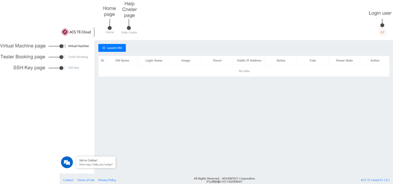

The TE-Cloud dashboard
On this dashboard, you can create a TE-Cloud virtual machine, check the virtual machine information and status, view the ETC information, set up the public SSH key for the tester, and book the tester time.

- Home page
- Opens the ACS TE-Cloud home page.
- Help Center page
- Opens Help Center in a new tab.
- Login user
- The user name of the current account. Click the user name and click LogOut to log out.
- Virtual Machine page
- See Virtual Machine page for details.
- Tester Booking page
- See Tester Booking page for details.
- SSH Key page
- See SSH Key page for details.
Note The dashboard introduced above is for the Developer Pro bundle. If the bundle
you purchased is the Developer bundle, you can see only the Virtual Machine page, but not the
Tester Booking and SSH Key page.
Functional changes
- Introduced in SmarTest 7.6.2